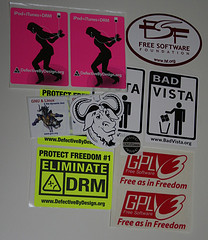

What is Free Software?

- The freedom to run the program, for any purpose (freedom 0).
- The freedom to study how the program works, and change it to make it do what you wish (freedom 1). Access to the source code is a precondition for this.
- The freedom to redistribute copies so you can help your neighbour (freedom 2).
- The freedom to distribute copies of your modified versions to others (freedom 3). By doing this you can give the whole community a chance to benefit from your changes. Access to the source code is a precondition for this.